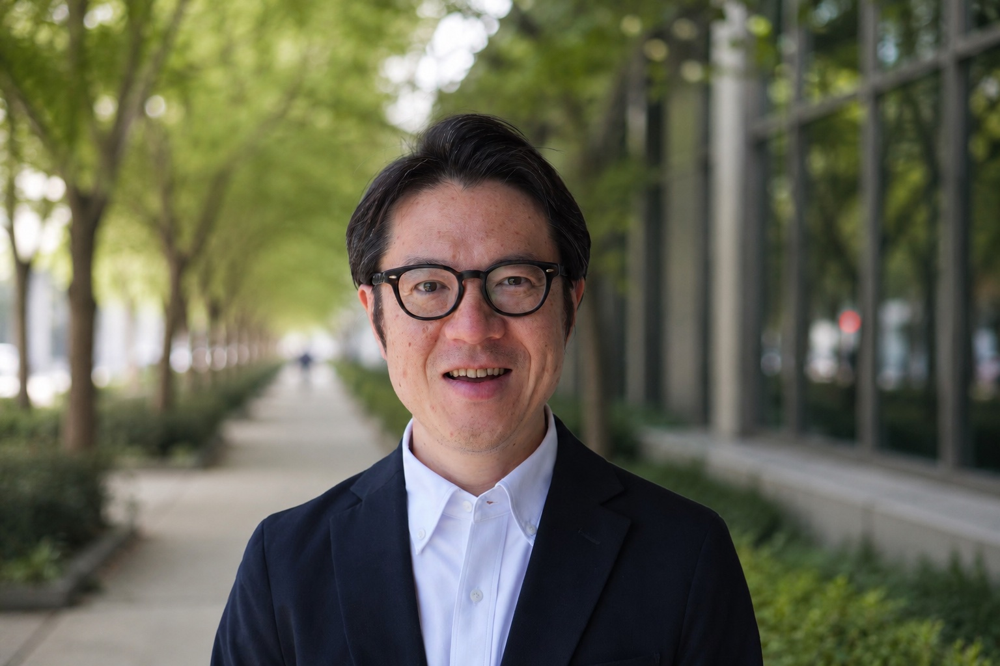

Masaya Takahashi
高橋正哉｜公認会計士
公認会計士。上場企業の会計監査やコンサルに長年関与してきました。あわせて、社外役員として取締役会の議論にも長く向き合ってきました。

Stance
目先の答えに、留まらない。
企業の意思決定では、短期的に耳障りの良い答えだけでは足りない場面があります。5年後・10年後の経営を見据え、本当に大事だと考えることを率直にお伝えする。短期的にはご納得いただきにくい意見であっても、責任を伴う立場だからこそ申し上げる。
会計監査でも、アドバイザリーでも、社外役員でも、その姿勢を大切にしています。
Explore